#> Principais pacotes
library(dplyr)
library(sf)
library(ggplot2)
#> Pacotes auxiliares
#> library(osmdata)
library(purrr)
library(rvest)
library(xml2)
library(ggthemes)
library(BAMMtools)
library(geobr)
library(elevatr)
library(raster)
library(stringr)
library(purrr)
library(janitor)O objetivo
O objetivo deste post é conseguir gerar o gráfico abaixo com uma única linha de código. Isto será possível, pois todo o processamento dos dados será feito por funções auxiliares. A inspiração do mapa vem diretamente de BlakeRMills, criador do pacote {MetBrewer}.
Abaixo segue a lista de todos os pacotes utilizados neste post. Não é necessário chamar todos eles com library mas é preciso ter todos eles instalados1. Com exceção dos três primeiros, usaremos somente uma ou duas funções de cada um dos pacotes.
Recife
Para ganhar intuição sobre o processo vamos montar um único caso. Escolho a cidade de Recife, pois, entre as capitais, ela não é tão grande.
Baixando os dados
O objetivo é gerar o mapa de altitude das maiores cidades do Brasil. Ao invés de ranquear as cidades por área, eu prefiro ordená-las por tamanho de população. Uma maneira fácil de conseguir esta informação é buscando ela diretamente na Wikipedia. No link temos uma tabela com código do IBGE, nome do município, nome do estado e população total em 2022.
É bastante simples importar esta tabela no R. O código abaixo, interpreta a página com base na url, encontra todas as tabelas2 e escolhe especificamente a tabela principal.
url = "https://pt.wikipedia.org/wiki/Lista_de_municípios_do_Brasil_por_população"
tab <- xml2::read_html(url) |>
rvest::html_table() |>
purrr::pluck(2)
head(tab)# A tibble: 6 × 5
Posição `Código IBGE` Município `Unidade federativa` População
<chr> <chr> <chr> <chr> <chr>
1 1º 3550308 São Paulo São Paulo 11 451 245
2 2º 3304557 Rio de Janeiro Rio de Janeiro 6 211 423
3 3º 5300108 Brasília Distrito Federal 2 817 068
4 4º 2304400 Fortaleza Ceará 2 428 678
5 5º 2927408 Salvador Bahia 2 418 005
6 6º 3106200 Belo Horizonte Minas Gerais 2 315 560 Este dado está um pouco sujo então eu limpo a tabela para facilitar nosso trabalho. Após limpar os dados, eu seleciono as 20 cidades mais populosas.
Code
as_numeric_char <- Vectorize(function(x) {
ls <- stringr::str_extract_all(x, "[[:digit:]]")
y <- paste(ls[[1]], collapse = "")
as.numeric(y)
})
clean_tab <- tab |>
janitor::clean_names() |>
rename(
code_muni = codigo_ibge,
name_muni = municipio,
rank = posicao,
name_state = unidade_federativa,
pop = populacao
) |>
filter(name_muni != "Brasil") |>
mutate(
code_muni = as.numeric(code_muni),
pop = as_numeric_char(pop),
rank = rank(-pop)
)
top20 <- slice_max(clean_tab, pop, n = 20)Shape da cidade
Agora que temos uma lista de cidades podemos importar o shapefile com os limites territoriais do município do Recife. Graças ao pacote {geobr} isto é muito simples. A função read_municipality faz justamente isto e precisa apenas do código de 7 dígitos do IBGE.
code_muni = top20 |>
filter(name_muni == "Recife") |>
pull(code_muni)
border = geobr::read_municipality(code_muni)
Downloading: 770 B
Downloading: 770 B
Downloading: 3.8 kB
Downloading: 3.8 kB
Downloading: 36 kB
Downloading: 36 kB
Downloading: 60 kB
Downloading: 60 kB
Downloading: 93 kB
Downloading: 93 kB
Downloading: 130 kB
Downloading: 130 kB
Downloading: 130 kB
Downloading: 130 kB
Downloading: 170 kB
Downloading: 170 kB
Downloading: 190 kB
Downloading: 190 kB
Downloading: 230 kB
Downloading: 230 kB
Downloading: 250 kB
Downloading: 250 kB
Downloading: 260 kB
Downloading: 260 kB
Downloading: 260 kB
Downloading: 260 kB ggplot(border) +
geom_sf() +
ggtitle("Limites do município")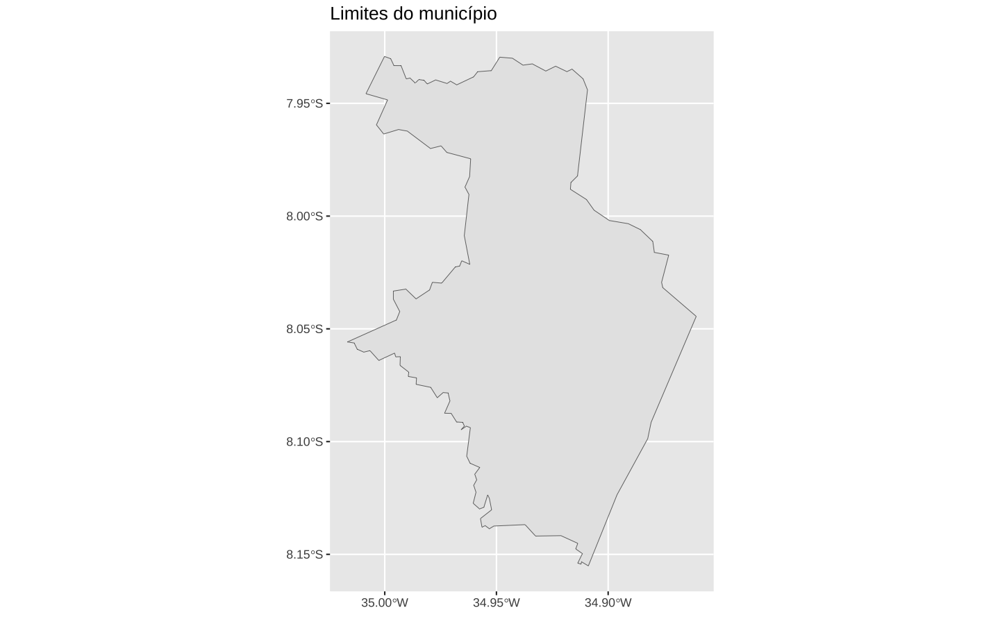
Principais vias
O segundo passo é importar o shape das principais vias da cidade. Aqui, uso o {osmdata}. O código abaixo importa as vias como “linhas” e depois usa os limites do município para remover os segmentos de linhas que estão fora da cidade.
#> Define os "limites" da busca. Monta um bounding box em torno do Recife
rec = opq(bbox = getbb("Recife, Pernambuco, Brazil"))
#> Pega as principais vias
streets = add_osm_feature(
rec,
key = "highway",
value = c("primary", "secondary", "tertiary", "residential")
)
#> Converte o objeto para sf (LINESTRING)
streets = osmdata_sf(streets)
streets = streets$osm_lines
streets = select(streets, osm_id, name)
streets = st_transform(streets, crs = 4674)
#> Encontra a intersecção entre as vias e os limites do município
streets_border = st_intersection(streets, border)Para tornar mais evidente o que está acontecendo mostro primeiro o resultado geral, com todas as vias.
ggplot(streets) +
geom_sf(linewidth = 0.15) +
theme_void()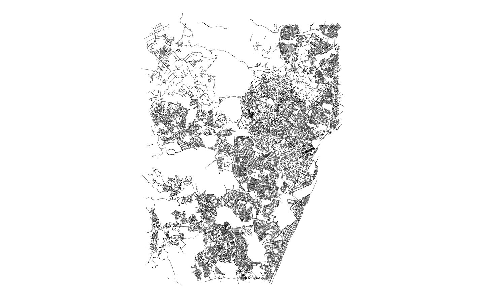
E agora o resultado após a intersecção entre as vias e os limites do município.
ggplot() +
geom_sf(data = border, fill = NA) +
geom_sf(data = streets_border, linewidth = 0.15, color = "gray20") +
theme_void()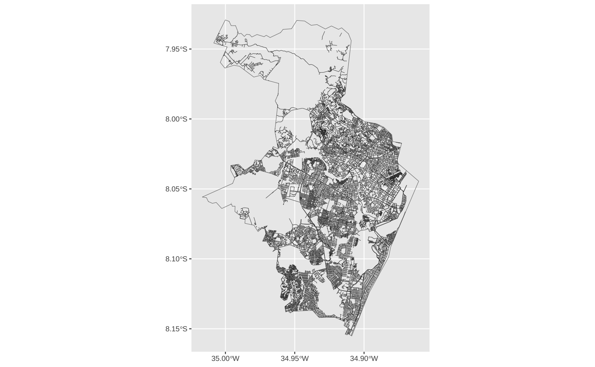
Altitude
O terceiro passo é importar os dados de altitude da cidade. Isto é feito com o pacote {elevatr}. Como os dados de altitude são armazenados como raster preciso convertê-los para dados em formato de vetor3. Novamente eu faço a intersecção destes dados com os limites do município para ficar somente com os valores que nos interessam.
O gráfico abaixo mostra o resultado final.
#> Importa os dados de altitude
altitude <- elevatr::get_elev_raster(border, z = 9, clip = "bbox")
#> Converte para 'vector'
rec_alti <- raster::rasterToPolygons(altitude)
rec_alti <- sf::st_as_sf(rec_alti)
names(rec_alti)[1] <- "elevation"
#> Converte o CRS e intersecta com os limites do município
rec_alti <- rec_alti %>%
st_transform(crs = 4674) %>%
st_intersection(border) %>%
#> Remove geometrias inválidas
filter(st_is_valid(.))#> Mapa
ggplot(rec_alti) +
geom_sf(aes(fill = elevation)) +
scale_fill_viridis_c(name = "Altitude", option = "inferno") +
theme_void()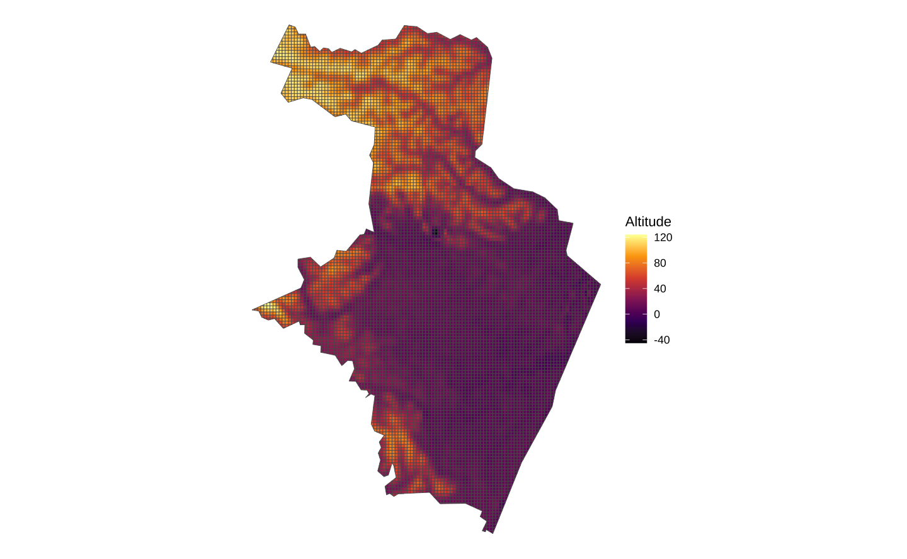
Classificando a altitude
Para facilitar a visualização dos dados, classifica-se eles em grupos. Eu uso o algoritmo de Jenks para classificar os dados de elevação em 7 grupos distintos. O algoritmo de Jenks, também conhecido como “quebras naturais”, é bastante utilizado com dados espaciais.
ggplot(rec_alti, aes(x = elevation)) +
geom_histogram(bins = 40, color = "white") +
geom_hline(yintercept = 0) +
scale_x_continuous(limits = c(-1, NA)) +
ggtitle("Distribuição da altitude em Recife") +
theme_light()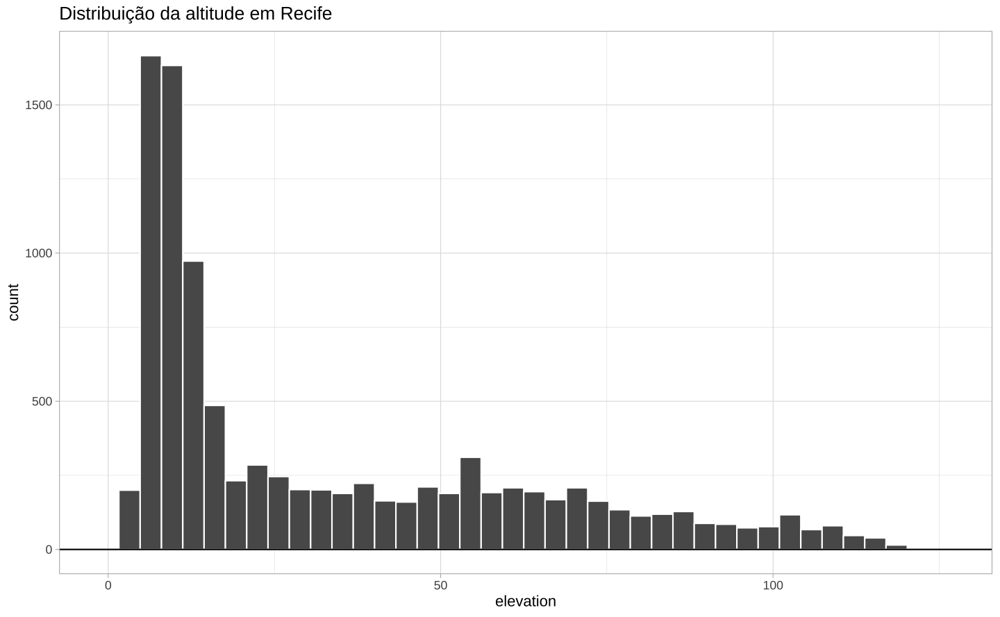
Como todo algoritmo de clustering, o algoritmo de Jenks busca minimizar a distância intraclasse enquanto tenta maximizar a distância entre as classes; isto é ele busca observações parecidas e juntas elas em um grupo e busca separar os grupos o máximo possível.
A medida de distância/dissemelhança que o algoritmo usa é a soma do quadrado dos desvios (em relação à média do grupo). O algortimo busca minimizar esta “variância” em cada um dos grupos para encontrar os grupos mais “parecidos” possíveis. O número de grupos é arbitrário e precisa ser selecionado manualmente4. Eu costumo escolher algum número entre 3 e 9.
jbreaks <- BAMMtools::getJenksBreaks(rec_alti$elevation, k = 7)
jbreaks <- round(jbreaks, -1)
rec_alti <- rec_alti %>%
mutate(
jenks_group = cut(elevation, jbreaks)
)
ggplot(rec_alti, aes(x = elevation)) +
geom_histogram(bins = 40, color = "white") +
geom_hline(yintercept = 0) +
geom_vline(xintercept = jbreaks) +
scale_x_continuous(limits = c(-1, NA)) +
labs(
title = "Distribuição da altitude em Recife",
subtitle = "Linhas verticais mostram o agrupamento do algoritmo de Jenks"
) +
theme_light()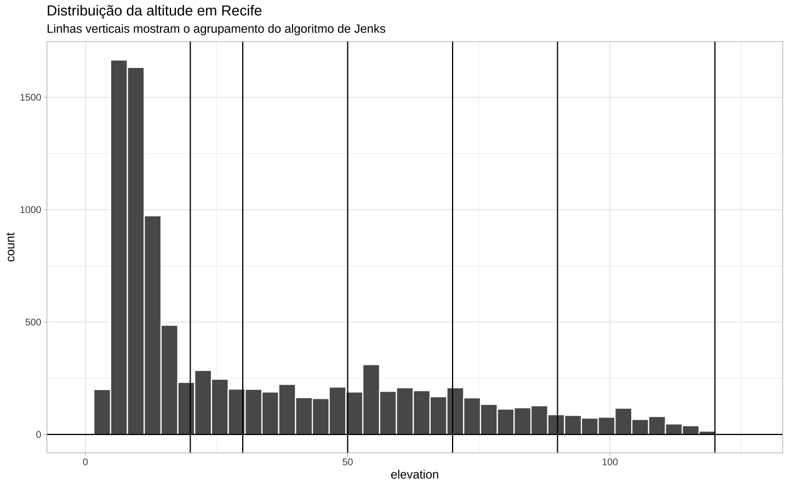
#> Mapa
ggplot(rec_alti) +
geom_sf(aes(fill = jenks_group)) +
scale_fill_viridis_d(option = "inferno") +
theme_void()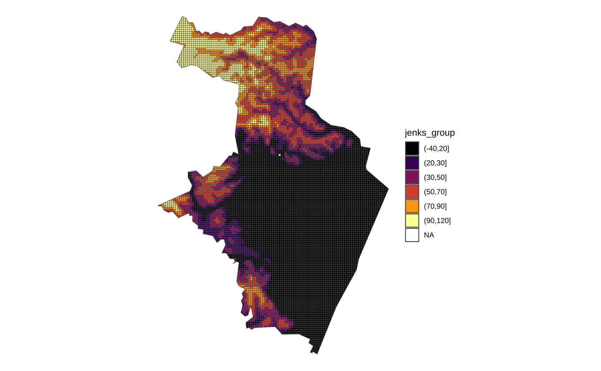
Juntando as partes
levels(rec_alti$jenks_group)
#> [1] "(-40,20]" "(20,30]" "(30,50]" "(50,70]" "(70,90]" "(90,120]"
jgroups = levels(rec_alti$jenks_group)jgroups = levels(rec_alti$jenks_group)
sub <- rec_alti %>%
filter(jenks_group == jgroups[6]) %>%
st_union(.) %>%
st_as_sf()
ggplot(sub) + geom_sf()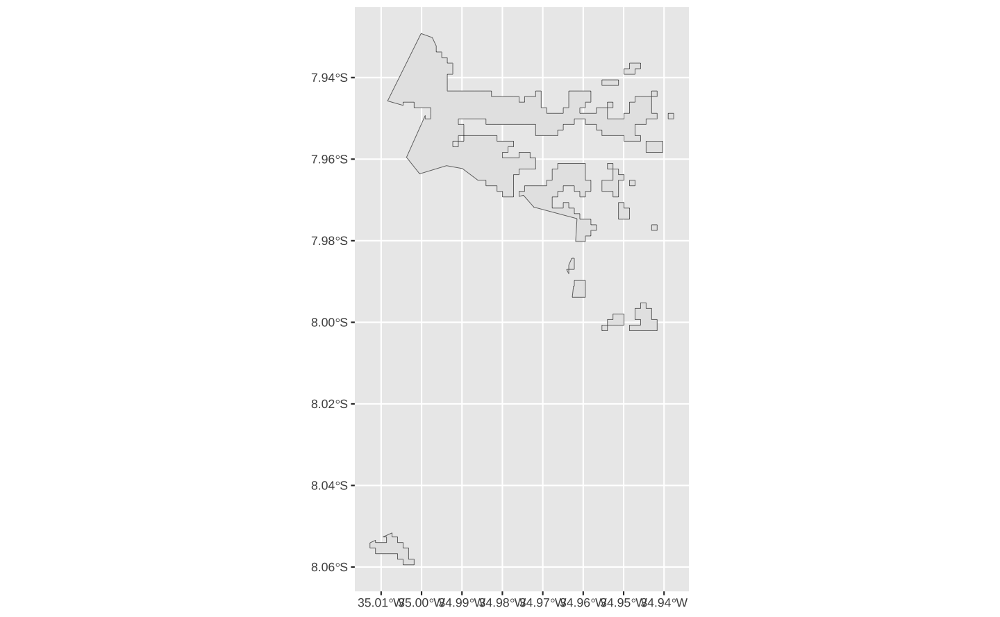
substreet <- streets %>%
st_intersection(sub) %>%
filter(st_is_valid(.))
ggplot() +
geom_sf(data = substreet, linewidth = 0.5) +
geom_sf(data = sub, fill = NA)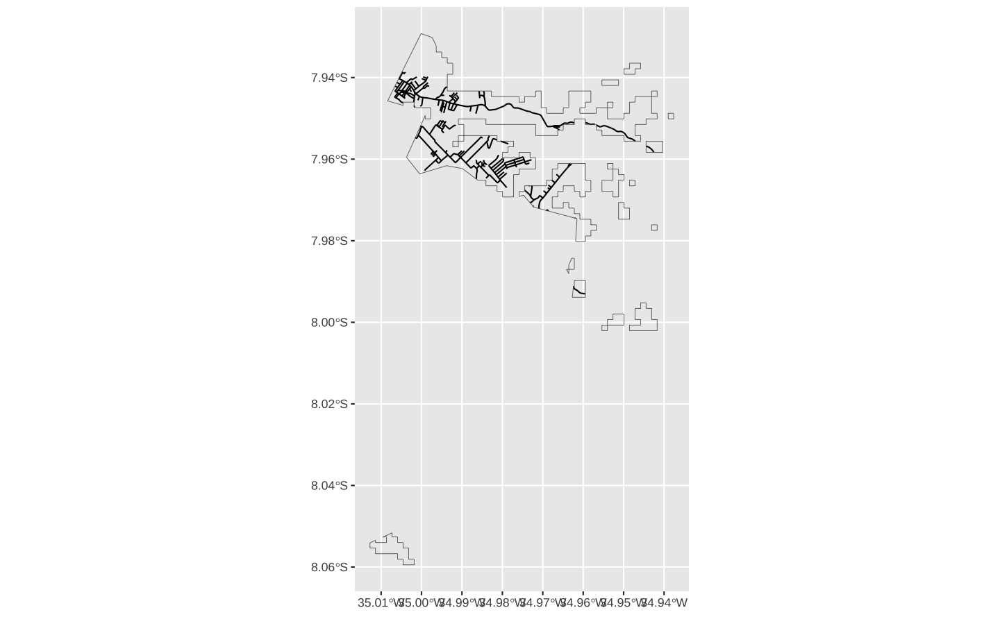
#> For each group get the full polygon and join with streets
join_streets = function(group) {
poly = rec_alti %>%
filter(jenks_group == group) %>%
st_union(.) %>%
st_as_sf()
joined = streets %>%
st_intersection(poly) %>%
filter(st_is_valid(.))
return(joined)
}
test = join_streets(group = jgroups[5])
ggplot(test) + geom_sf()
get_streets_altitude <- function(shp) {
#> Get all groups
groups = levels(shp$jenks_group)
#> Apply the function to all groups
street_levels = purrr::map(groups, join_streets)
#> Bind all results together
out = bind_rows(street_levels, .id = "level")
return(out)
}
rec_streets_altitude = get_streets_altitude(rec_alti)ggplot(rec_streets_altitude) +
geom_sf(aes(fill = level, color = level), linewidth = 0.2) +
scale_fill_viridis_d(name = "Altitude", option = "inferno") +
scale_color_viridis_d(name = "Altitude", option = "inferno") +
theme_void() +
theme(
legend.position = "none",
panel.background = element_rect(color = NA, fill = "gray75")
)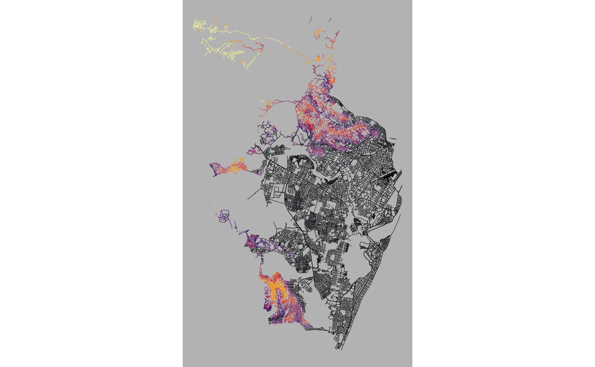
Mapa final
cores <- c(
"#ffd902", "#FFAB28", "#FF751B", "#FF3E0D", "#cc0600", "#a20d46", "#5f0078"
)
jlabels = paste(jbreaks, jbreaks[-1], sep = "–")
jlabels[1] = paste("<", min(jbreaks))
jlabels[length(jlabels)] = paste(">", max(jbreaks))
ggplot(data = rec_streets_altitude) +
geom_sf(aes(color = level, fill = level), linewidth = 0.2) +
scale_color_manual(name = "Altitude", values = cores, labels = jlabels) +
scale_fill_manual(name = "Altitude", values = cores, labels = jlabels) +
guides(fill = guide_legend(nrow = 1), color = guide_legend(nrow = 1)) +
ggtitle("Recife") +
ggthemes::theme_map() +
coord_sf() +
theme(
plot.title = element_text(size = 16, hjust = 0.5),
legend.position = "top",
legend.direction = "horizontal",
legend.text = element_text(size = 10),
panel.background = element_rect(color = NA, fill = "#f6eee3")
)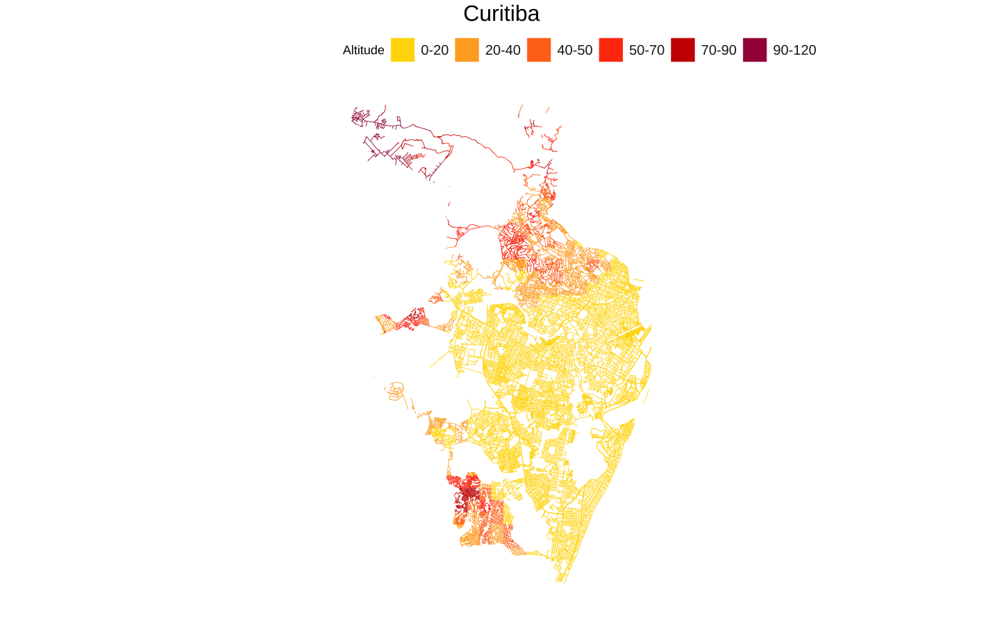
Programação funcional
A ideia geral da programação funcional é de transformar nosso código em funções.
Funções compartimentalizam o seu ambiente de trabalho. O que acontece dentro da função, fica dentro da função.
dados <- data.frame(
x = c("A", "A", "A", "B", "C"),
y = c(1, 3, 7, 4, 1)
)
filtrar_linhas <- function(df, filter_val) {
dplyr::filter(df, x == filter_val)
}
filtrar_linhas(dados, "B") x y
1 B 4Shape da cidade
Por conveniência, eu repito abaixo o código que se usou para chegar no shape dos limites de Recife. Note o que acontece: (1) o primeiro passo filtra um data.frame para encontrar o código do IBGE do respectivo município; (2) usando o código, a função geobr::read_municipality() importa o shape.
Há dois objetos importantes nesta função: a tabela que contém as informações de ‘nome da cidade’ e ‘código do ibge’; e o string com o ‘nome da cidade’.
code_muni = top20 |>
filter(name_muni == "Recife") |>
pull(code_muni)
border = geobr::read_municipality(code_muni)Para transformar o código acima numa função, basta incluir estes objetos como argumentos.
get_border = function(city) {
code_muni = top20 |>
dplyr::filter(name_muni == city) |>
dplyr::pull(code_muni)
border = geobr::read_municipality(code_muni, showProgress = FALSE)
return(border)
}
get_border_2 = function(city, dim_city) {
code_muni = dim_city |>
dplyr::filter(name_muni == city) |>
dplyr::pull(code_muni)
border = geobr::read_municipality(code_muni, showProgress = FALSE)
return(border)
}cities_brasil = st_drop_geometry(geobr::read_municipality(showProgress = FALSE))
states_brasil = st_drop_geometry(geobr::read_state(showProgress = FALSE))
cities_brasil = mutate(cities_brasil, code_state = as.numeric(code_state))
cities_brasil = inner_join(cities_brasil, states_brasil)get_border = function(city) {
if (is.numeric(city)) {
code_muni = city
} else if (is.character(city)){
#> Encontra o código do município
code_muni = cities_brasil |>
filter(name_muni == city) |>
pull(code_muni) |>
unique()
}
stopifnot(length(code_muni) == 1)
#> Baixa o shapefile do município
border = geobr::read_municipality(code_muni, showProgress = FALSE)
return(border)
}Principais vias
get_streets = function(city, border) {
#> Encontra o nome da Unidade Federativa
nome_uf = cities_brasil |>
filter(name_muni == city) |>
pull(name_state)
#> Monta o nome do local
name_place = stringr::str_glue("{city}, {nome_uf}, Brazil")
#> Monta a query
place = opq(bbox = getbb(name_place))
#> Importa todas as principais vias da cidade
streets = add_osm_feature(
place,
key = "highway",
value = c("primary", "secondary", "tertiary", "residential")
)
#> Converte o dado
streets = streets %>%
osmdata_sf() %>%
.$osm_lines %>%
select(osm_id, name) %>%
st_transform(crs = 4674)
#> Enconrtra a intersecção entre as estradas e o limites do município
streets_border = st_intersection(streets, border)
# out = list(streets = streets, streets_border = streets_border)
return(streets_border)
}Altitude
get_elevation <- function(border, z = 8) {
altitude <- elevatr::get_elev_raster(border, z = z, clip = "bbox")
altitude <- raster::rasterToPolygons(altitude)
altitude <- st_as_sf(altitude)
names(altitude)[1] <- "elevation"
altitude = st_transform(altitude, crs = 4674)
altitude = suppressWarnings(st_intersection(altitude, border))
altitude = filter(altitude, st_is_valid(altitude))
return(altitude)
}Classificando
add_jenks_breaks = function(shp, k = 7, round = TRUE, r = 0) {
#> Classifica os dados de altitude em k grupos segundo o algo. de Jenks
jbreaks = BAMMtools::getJenksBreaks(shp$elevation, k = k)
#> Arredonda os números para chegar numa legenda menos quebrada
if (round) {
jbreaks = round(jbreaks, r)
}
#> Cria a coluna 'jenks_group' que classifica cada valor num grupo
shp = mutate(shp, jenks_group = cut(elevation, jbreaks))
#> Verifica se todas as observações tem um grupo
check = any(is.na(shp$jenks_group))
if (check) {
warning("Some observations have failed to be grouped")
}
#> Transforma os groups em legendas
labels = get_jenks_labels(jbreaks)
#> Retorna o output numa lista
out = list(shp = shp, labels = labels)
return(out)
}
get_jenks_labels <- function(x) {
labels = paste(x, x[-1], sep = "–")
labels[1] = paste("<", x[2])
labels[length(labels)] = paste(">", max(x))
return(labels)
}Juntando as partes
get_streets_altitude <- function(altitude, streets) {
stopifnot(any(colnames(altitude) %in% "jenks_group"))
#> Get all groups
groups = levels(altitude$jenks_group)
#> For each group get the full polygon and join with streets
join_streets = function(group) {
poly = altitude %>%
filter(jenks_group == group) %>%
st_union(.) %>%
st_as_sf() %>%
st_make_valid()
joined = suppressWarnings(st_intersection(streets, poly))
return(joined)
}
#> Apply the function to all groups
street_levels = purrr::map(groups, join_streets)
#> Bind all results together
out = bind_rows(street_levels, .id = "level")
return(out)
}Mapa
map_plot = function(shp, labels, title, showtext = TRUE) {
cores = c(
"#ffd902", "#FFAB28", "#FF751B", "#FF3E0D", "#cc0600", "#a20d46",
"#5f0078", "#3f004f"
)
font = ifelse(showtext == TRUE, "Roboto Condensed", "sans")
plot =
ggplot(data = shp) +
geom_sf(aes(color = level, fill = level), linewidth = 0.2) +
scale_color_manual(
name = "Altitude",
labels = labels,
values = cores) +
scale_fill_manual(
name = "Altitude",
labels = labels,
values = cores) +
guides(fill = guide_legend(nrow = 1), color = guide_legend(nrow = 1)) +
ggtitle(title) +
ggthemes::theme_map() +
coord_sf() +
theme(
plot.title = element_text(
size = 30,
hjust = 0.5,
family = font
),
legend.title = element_text(
size = 20,
family = font,
color = "gray10"
),
legend.text = element_text(
size = 14,
family = font,
color = "gray10"
),
legend.position = "top",
legend.direction = "horizontal",
plot.background = element_rect(color = NA, fill = "#f6eee3"),
panel.background = element_rect(color = NA, fill = "#f6eee3"),
legend.background = element_rect(color = NA, fill = "#f6eee3")
)
return(plot)
}
sysfonts::font_add_google("Roboto Condensed", "Roboto Condensed")
showtext::showtext_auto()Uma função final
map_altitude <- function(city, k = 6, z = 7) {
#> Importa o shape do limite do município
message("Importando os limites do município: ", city)
city_border = get_border(city)
#> Importa as principais vias da cidade e junta com o limite do muni
message("Importando as vias.")
city_street = get_streets(city, city_border)
#> Importa a altitude da cidade
message("Importando a altitude.")
city_elevation = suppressMessages(get_elevation(city_border, z = z))
#> Classifica a altitude em grupos
message("Classificando e juntando os shapefiles.")
jenks = add_jenks_breaks(city_elevation, k = k)
city_elevation = jenks[["shp"]]
labels = jenks[["labels"]]
#> Junta a altitude (agrupada) com as vias
city_street_elevation = get_streets_altitude(city_elevation, city_street)
#> Monta o mapa final
message("Gerando o mapa final.")
plot = map_plot(city_street_elevation, labels = labels, title = city)
message("Feito.")
#> Retorna o output numa lista
out <- list(
shp = city_street_elevation,
streets = city_street,
elevation = city_elevation,
plot = plot
)
return(out)
}Testando a função
Funciona!
scs = map_altitude("São Caetano Do Sul", z = 10, k = 6)
scs$plot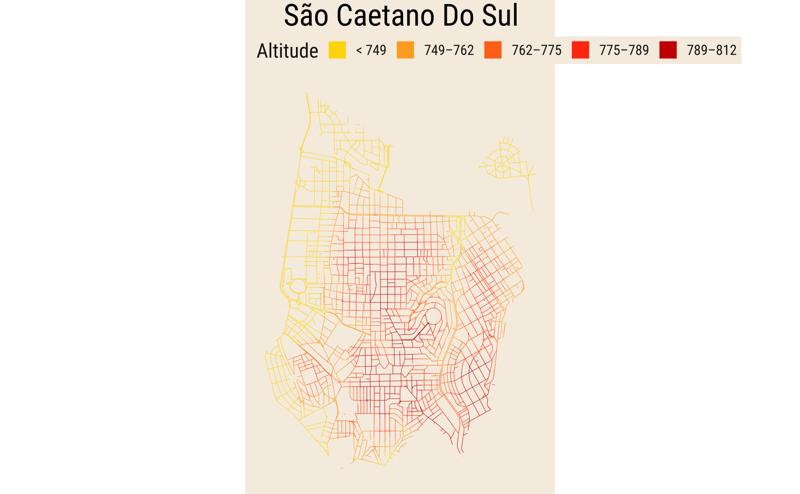
fortaleza = map_altitude("Fortaleza", k = 6, z = 4)map_altitude("Ouro Preto")$plot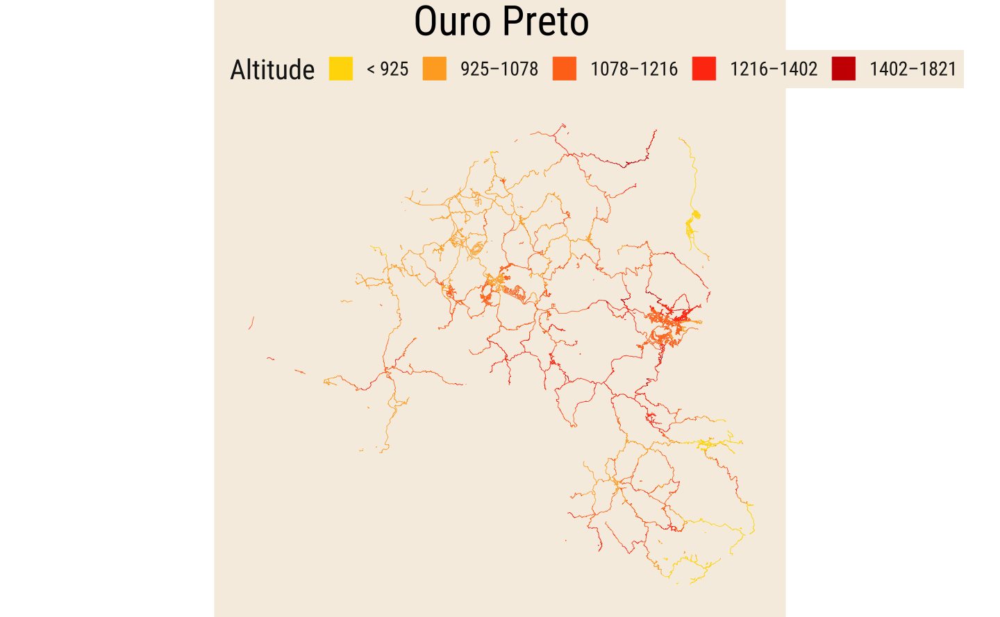
map_altitude("Osasco", k = 8, z = 7)$plot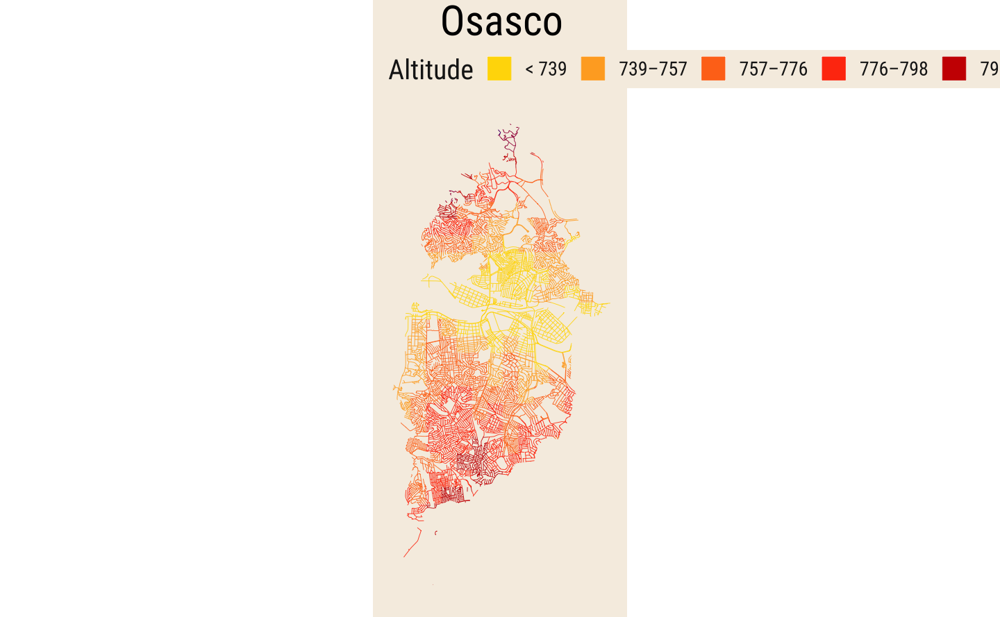
map_altitude("Belo Horizonte", k = 7, z = 7)$plot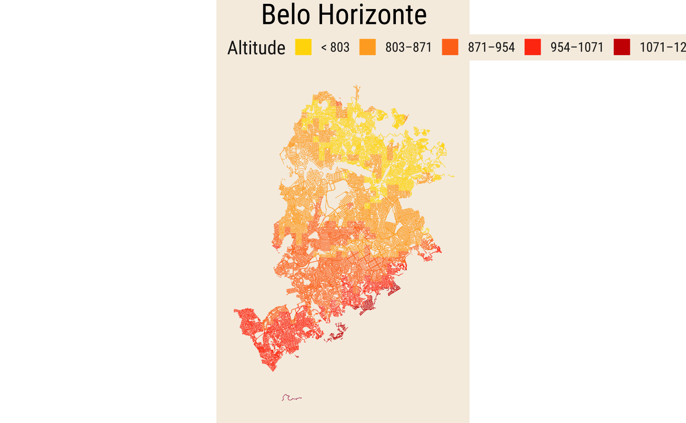
Resultado final
Footnotes
Chamar muitos pacotes numa mesma sessão pode levar a muitos conflitos entre funções com o mesmo nome. Isto não é um problema muito sério já que sempre é possível especificar
nome_pacote::nome_funcao.↩︎Na verdade, o código encontra todos os elementos com a classe
tablena página.↩︎Para uma introdução aos tipos de objetos espaciais (raster e vector) veja Lovelace (2023).↩︎
Existem alguns métodos que ajudam a escolher um número “ótimo” de clusters, como o “elbow method” mas vale lembrar que clustering é muito mais arte do que ciência. Clustering envolve agrupar dados semelhantes em um número finito de grupos, mas há inúmeras maneiras de definir “semelhante”; além disso, o algoritmo de clustering sempre chega num agrupamento, qualquer que seja a escolha do número de grupos. Assim, é importante frisar que estes resultados são mais explortatórios, por assim dizer.↩︎